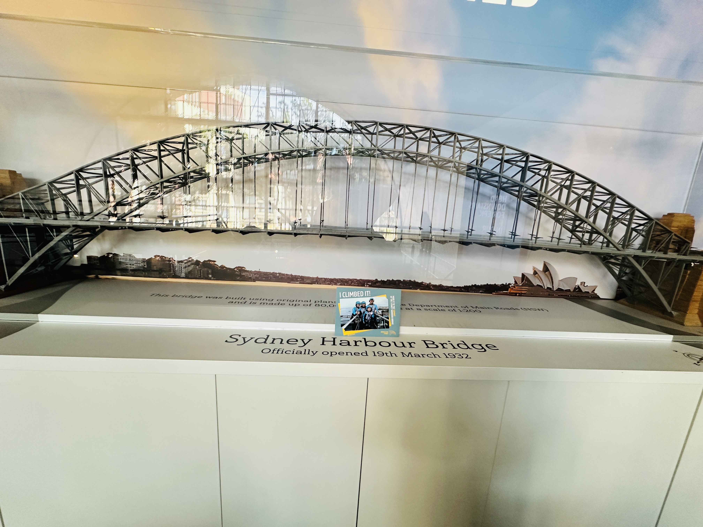
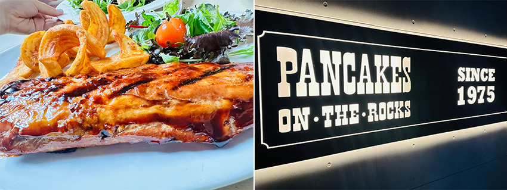
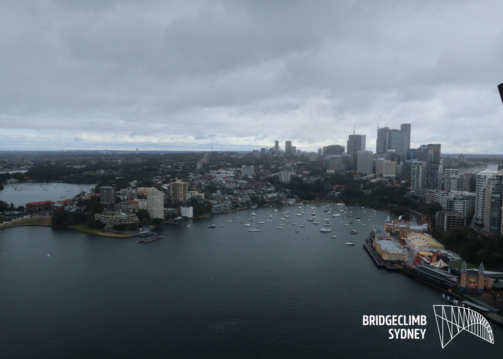

如果說去雪梨旅行是一場夢，那麼「攀登雪梨大橋」絕對是這場夢裡最熱血的一個章節。
去年七月，我們全家趁著暑假，飛到了季節相反的南半球。抵達的前幾日，我看著藍天白雲下的鋼鐵大橋，心裡充滿期待。
 |
 |
沒想到，老天爺卻開了一個小玩笑，我們預約攀爬的那天，預報顯示「七月三日雷雨天」。七月三日出發前看著民宿外的景色，雪梨港不是耀眼的湛藍色，而是被厚厚的灰雲層層包圍。空氣裡透著清冷，那種南半球冬天的寒意，像在提醒我們這不是一趟輕鬆的散步。孩子們看著窗外，聲音有些失落：「天黑黑的、地濕濕的，我們真的要爬嗎？」
 |
我心裡雖然也有點小遺憾，但還是拍拍孩子們肩膀說：「陰天爬橋才酷啊！那是『限定版』的風景，我們去當雲端裡的探險家吧！」
攀登雪梨大橋（BridgeClimb）並不是買張門票就能往上衝的。我們來到基地的準備區，那種專業的氣氛立刻讓原本還在打哈欠的孩子們都清醒了過來。
 |
首先，我們須換上統一的深灰色連身裝。這套衣服設計得非常細心，為了安全，身上不能帶任何雜物，連眼鏡都要用繩子繫在衣服上。接著，工作人員遞給我們沉甸甸的保險腰帶。看著孩子們認真地扣上扣環以及測試對講機的樣子，我突然發現，平時在家連整理書包都要催促的女孩們，此刻竟流露出一種大人的專注。
 |
「感覺自己好像特務喔！」孩子們壓低聲音對我說，眼裡的緊張被興奮取代了。在正式踏上大橋前，我們需要先在室內的模擬軌道上練習。這次我預約了中文領隊，領隊用流利的中文告訴我們，大橋上的風很大，保險鎖扣必須全程勾在鋼鐵軌道上。這種專業的預演，讓我們在還沒登高之前，就已經在心裡種下了「安全第一」與「團隊合作」的種子。
當我們推開通往大橋的小門，一陣冷冽的海風迎面撲來。腳下不再是堅實的水泥地，而是格狀的金屬踏板。透過縫隙，可以直接看到下方幾十公尺處，那川流不息的車潮和深色的海水。
「哇！」我們一家同時發出一聲驚呼，手不自覺地抓緊了護欄。陰天的雪梨大橋，呈現出一種冷峻的鋼鐵色澤。雖然沒有陽光，但這座巨大的「大衣架」反而顯得更平易近人。那些粗壯的鋼樑、成千上萬的鉚釘，在柔和的灰色光線下清晰可見。
這是一座有故事的橋，它在 1932 年完工，見證了這座城市的興衰，而現在，我們正踩在它的背上。
 |
隨著坡度漸漸變陡，我們開始沿著橋樑的弧形向上攀爬。這一段路考驗的不僅是體力，更是膽量。孩子們走在我的前面，我盯著她們小小的背影，看著她們一步一步穩健地向上移動，心裡湧起一股莫名的感動。平時我們總覺得孩子還小，需要保護，但在這座大橋上，她們正用自己的雙腳去對抗高度，用自己的意志去克服對未知的恐懼。
終於，我們來到了大橋最頂端的圓弧中心，海拔 134 公尺的高空。
 |
領隊示意我們停下腳步。我環顧四周，那一刻，所有的疲累都消失了。右邊是著名的雪梨歌劇院，在陰天下，它的純白帆船造型少了一點亮麗，卻多了一種優雅的寂靜感，就像靜靜躺在灰色絲絨上的珍珠。遠處的城市建築群被淡淡的霧氣籠罩，車輛像彩色的小火柴盒在橋面上滑動。雖然沒有金色的落日或湛藍的海水，但這種灰調的雪梨，反而有一種「潑墨畫」的意境。層次分明的雲朵在天空中翻滾，讓整個港灣顯得無比壯闊。
「爸爸媽媽，你們看！那邊的雲好像在跑！」孩子指著遠方的藍山方向大喊。 在那樣的高度，風真的很大，我們必須靠得很近才能聽清楚彼此的話。這種「世界只有我們一家四口」的感覺，是在平地嘈雜的景點裡絕對體驗不到的。我們在那根橫跨港灣的鋼樑上合照，每個人臉都被吹得紅撲通的，但笑容卻是我見過最燦爛的一次。
 |
下橋時，我們走得比較順手了。領隊沿路跟我們講述大橋修築時的小故事，比如當年那些工人在沒有先進設備的情況下，是如何在烈日或寒風中釘下每一顆鉚釘。孩子們都聽得津津有味，不停問領隊：「那時候他們會害怕嗎？」領隊笑了笑說：「會啊，但為了家人的生活，為了這座城市的交通，他們選擇了勇敢。」這句話深深印在我的心裡。
我們這次攀爬，對孩子們來說，何嘗不是一次關於「勇氣」的實踐。在生活中，我們常遇到像「陰天」一樣不順心的時刻，計畫被打亂、天色不美、困難重重。但就像這次爬橋，如果我們因為天陰就放棄，我們就永遠看不見這片壯麗的灰色港灣，也無法感受到在高空中互相扶持的溫度。我們在橋上聊了很多，聊平時沒時間聊的學校趣事，聊國小畢業後未來想挑戰的夢想。這座橋，竟然成了我們一家之間最棒的溝通橋樑。
回到地面，脫掉重重的裝備時，我發現自己的腿竟然有一點微微發抖，但心裡卻是非常充實的。領隊遞給我們一張證書，上面印著我們登頂的日期和名字。孩子們小心翼翼地捧著那張紙，表情比國小畢業典禮領的市長獎還要自豪。她對我說：「媽媽，下次我們再來爬好不好？下次我要挑戰夜爬！我想要看夜景！」
 |
走出攀登中心，外頭開始飄起了一點點細細的冬雨。七月的雪梨雖然寒冷且灰暗，但在我眼中，這座城市卻因為這趟冒險變得鮮活且溫暖。這場親子遊記，或許沒有明信片上的完美陽光，卻有著比陽光更珍貴的東西，那是我們共同跨越恐懼的記憶，是我們在鋼鐵脊樑上留下的笑聲。
帶孩子出遊，最美的風景往往不在於天氣的好壞，而在於我們如何面對「不完美」。陰天的雪梨大橋，教導了我們「冷靜」與「堅韌」。它默默地站在那裡，無論晴雨，始終挺拔。而我們也在這三個小時的攀爬中，學會了在灰色的天空下尋找美感，在寒冷的冬風中感受家人的溫度。
那一晚，我們在岩石區的小餐館吃著熱騰騰的豬肋排。
 |
隔著玻璃窗，我看著那座隱沒在夜色與細雨中的大橋，心中充滿感激。謝謝這個陰天，讓我們擁有了這段專屬的、充滿鋼鐵韌性的親子時光。這份回憶，將會像那些鉚釘一樣，深深地固定在我們全家人的生命裡，永不生鏽。
 |